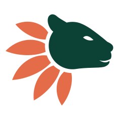

Tout commence par des plantes.
Celles que montre la fenêtre sont celles du flacon. Pas une de plus.
Faites défiler : le flacon se retourne
Celles que montre la fenêtre sont celles du flacon. Pas une de plus.
Cinq familles de soins. Choisissez la vôtre, ou laissez le diagnostic composer votre routine.
Les soins que l'on rachète le plus, toutes familles confondues. Classement inventé pour la maquette.

La lionne n'a pas de crinière. Ce sont les plantes qui la lui donnent : cinq feuilles, dessinées comme celles de nos étiquettes.
Maison Léone fabrique en France des soins naturels pour la peau et les cheveux, pensés pour tous les âges. Sur chaque flacon, une fenêtre montre ce que contient la formule.
Le diagnostic vous le dit en trois ou quatre questions, et compose une routine que vous pouvez mettre au panier d'un geste. Vous pouvez aussi filtrer les soins par besoin : peau sensible, cheveux secs, teint terne…
Oui. Réservez-le depuis sa fiche : la boutique de votre choix le met de côté, vous l'essayez sur place et vous ne payez que si vous le gardez.
Elle est offerte dès 49 € d'achat, et coûte 4,90 € en dessous. Le retrait en boutique est toujours gratuit.
Regardez sa fenêtre : les plantes dessinées sont celles de la formule. Sa fiche nomme ensuite chaque ingrédient en français, des plantes à ce qui conserve le soin. La liste officielle de l'étiquette suit, telle qu'elle est imprimée.
Les plantes et les matières de la formule, et seulement celles-là. Si la lavande est dessinée, elle est dans le flacon. Les noms sont repris juste sous le nom du soin.
Léone veut dire lionne. La lionne n'a pas de crinière : notre logo lui en donne une, faite de cinq feuilles.
Non. La lionne vient de la savane, et ses voisins prêtent leurs motifs aux familles de soins : léopard pour le visage, herbes hautes pour le corps, zèbre pour les cheveux, girafe pour les argiles. Ce sont des dessins, imprimés ton sur ton. Dans les formules, 45 soins sur 48 sont vegans ; les trois autres contiennent de la propolis, un produit de la ruche.
Non, ni les soins ni leurs ingrédients. En Europe, la loi l'interdit pour tous les cosmétiques depuis 2013 : c'est la règle, et nous la suivons.
Au moins 95 % de chaque formule est d'origine naturelle, selon la norme ISO 16128. Le reste, c'est ce qui conserve le soin une fois ouvert et ce qui lui donne sa texture. Nous ne disons ni « écologique », ni « hypoallergénique » : nous préférons vous donner la liste complète.
Tout se trie : flacons, pompes, pots et bouchons vont dans le bac de tri, le verre des élixirs au conteneur à verre. La fiche de chaque soin donne sa consigne, l'étiquette aussi.
Pas tous. Plusieurs formules contiennent des huiles essentielles. La fiche de chaque soin et son étiquette indiquent les précautions à respecter.
En France : ils y sont formulés, fabriqués et mis en flacon.
Une lettre par mois : un soin, une plante, un geste.
0 %